Traffic Control
When at or approaching traffic signals or signs, yield to pedestrians, bicyclists, and other nearby vehicles that may have the right-of-way. See Right of Way Rules: Who Goes First, in this section.
Traffic Signals
Solid Red Light
A red traffic signal light means STOP. You can turn right at a red light, if:
- There is not a NO TURN ON RED sign posted.
- You stop at the stop or limit line, yield for pedestrians, and turn when it is safe.
Red Arrow
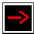
A red arrow means STOP. Do not turn at a red arrow. Remain stopped until a green traffic signal light or green arrow appears.
Flashing Red Light
A flashing red signal light means STOP. After stopping, you may go when it is safe.
Solid Yellow Light
A yellow traffic signal light means CAUTION. The light is about to turn red. When you see a yellow traffic signal light, stop, if you can do so safely. If you cannot stop safely, cautiously cross the intersection.
Yellow Arrow
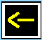
A yellow arrow means the protected turning time is ending. The signal will change soon. If you cannot stop safely or you are already in the intersection, cautiously complete your turn. Pay attention to the next signal. It could be a:
- Green or red traffic signal light.
- Red Arrow.
Flashing Yellow Light
A flashing yellow traffic signal light is a warning to PROCEED WITH CAUTION. Slow down and be alert. You do not need to stop.
Flashing Yellow Arrow
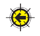
You can turn, but your turn is not protected from other traffic. Proceed to turn left after yielding to oncoming traffic and proceed with caution.
Solid Green Light
A green traffic signal light means GO. You should still stop for any vehicle, bicyclist, or pedestrian in the intersection. Only proceed if you have enough space without creating a danger to any oncoming vehicle, bicyclist, or pedestrian. Do not enter the intersection if you cannot get completely across before the traffic signal light turns red.
Green Arrow
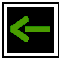
A green arrow means GO in the direction the arrow is pointing. The green arrow allows you to make a protected turn. Oncoming vehicles are stopped by a red traffic signal light.
Traffic Light Not Working
When a traffic light is not working, stop as if the intersection is controlled by STOP signs in all directions. Then proceed cautiously when it is safe to do so.
Pedestrian Signals and Signs
WALK or Walking Person
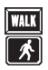
You may cross the street.
Don’t Walk or Raised Hand
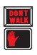
You may not cross the street.
Flashing Don’t Walk or Flashing Raised Hand
Do not start crossing the street. The traffic signal light is about to change. Drivers must yield to pedestrians, even if the Don’t Walk light is flashing.
Numbers
The numbers count down the seconds left for crossing the street.
Diagonal Crossing
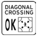
These are crisscross and diagonal crosswalks that allow pedestrians to cross the intersection in any direction at the same time. Cross only when the walk signal allows it.
Sounds
Sounds such as beeping, chirping, or verbal messages help blind or visually impaired pedestrians cross the street.
Pedestrian Push Button
This is used to activate the WALK or Walking Person signal.
No Pedestrian Signals
If there are no pedestrian signals, obey the vehicle traffic signals.
Signs
Obey all warning signs regardless of their shape or color.
STOP Sign
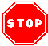
Make a full stop before entering the crosswalk or at the limit line. If there is no limit line or crosswalk, stop before entering the intersection. Check traffic in all directions before proceeding.
Red YIELD Sign
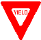
Slow down and be ready to stop to let any vehicle, bicyclist, or pedestrian pass before you proceed.
Red and White Regulatory Sign
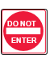
Follow the sign’s instruction. For example, DO NOT ENTER means do not enter the road or ramp where the sign is posted.
WRONG WAY Sign
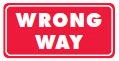
If you enter a roadway against traffic, DO NOT ENTER and WRONG WAY signs may be posted. When it is safe, back out or turn around. If you are driving at night, you will know you are going the wrong way if the road reflectors shine red in your headlights.
Red Circle with a Red Line Through It
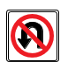
The picture inside the circle shows what you cannot do and may be shown with words.
Yellow and Black Circular Sign or X-shaped Sign
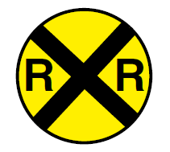
You are approaching a railroad crossing. Look, listen, slow down, and prepare to stop. Let any trains pass before you proceed.
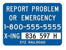
Many railroad crossings also have a blue and white sign to tell you what to do if there is an emergency on or near the tracks or if your vehicle has stalled on the tracks.
5-sided Sign
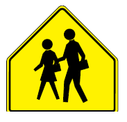
You are near a school. Drive slowly and stop for children in the crosswalk.
Diamond-shaped Sign
Warns you of specific road conditions and dangers ahead.
White Rectangular Sign
Communicates many important rules you must obey.
Warning Signs
Warns of conditions related to pedestrians, bicyclists, schools, playgrounds, school buses, and school passenger loading zones.
For more information about signs, visit dot.ca.gov/programs/safety-programs/sign-charts.
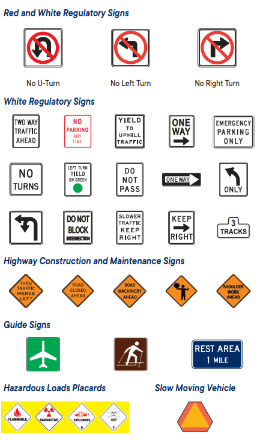
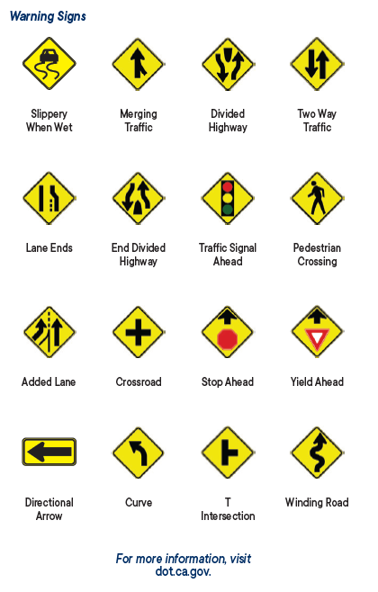
Right-of-Way Rules: Who Goes First?
Right-of-way rules help you understand who goes first when vehicles, pedestrians, and bicyclists meet on the road. The vehicle that arrives to the intersection first has the right-of-way. Other vehicles, bicyclists, and pedestrians must wait for the person who has the right-of-way. Never assume that other drivers will give you the right-of-way. Give up your right-of-way when it will help prevent collisions.
Intersections
An intersection is any place where one road meets another road. Controlled intersections have signs or traffic signal lights. Uncontrolled and blind intersections do not. Before entering an intersection, look left, right, and ahead to check for vehicles, bicyclists, and pedestrians. Be prepared to slow down and stop if necessary. Pedestrians always have the right-of-way. Here are some right-of-way rules at intersections:
- Without STOP or YIELD signs: The vehicle that arrives to the intersection first has the right-of-way. However, if a vehicle, pedestrian, or bicyclist gets to the intersection at the same time as you, give the right-of-way to the vehicle, pedestrian, or bicyclist on your right. If you approach a stop sign and there is a stop sign on all four corners, stop first and proceed as above.
- T intersections without STOP or YIELD signs: Vehicles, bicyclists, and pedestrians on the through road (continuing to go straight) have the right-of-way.
- Turning left: Check for pedestrians. Give the right-of-way to any pedestrian or approaching vehicle that is close enough to be dangerous.
- Turning right: Always check for pedestrians crossing the street, and motorcycles and bicycles riding next to you.
- Green traffic signal light: Proceed with caution. Pedestrians have the right-of-way.
- Entering traffic: When entering traffic, you must proceed with caution and yield to the traffic already occupying the lanes. It is against the law to stop or block an intersection where there is not enough space to completely cross before the traffic signal light turns red.
Roundabouts
In a roundabout, traffic travels in one direction around a central island.
How to use a roundabout:
- Slow down as you approach.
- Yield to all traffic already in the roundabout.
- Enter heading to the right when there is a big enough gap in traffic to merge safely.
- Watch for signs and lane markings that guide you.
- Travel in a counter-clockwise direction. Do not stop or pass.
- Signal when you change lanes or exit.
- If you miss your exit, continue around until you return to your exit.
If the roundabout has multiple lanes, choose your entry or exit lane based on your destination. This is shown in the image below. To:
- Turn right (yellow car): Choose the right lane and exit in the right lane.
- Go straight (red car): Choose either lane. Exit in the lane you entered.
- Turn left: Enter and continue driving until you reach the exit in the direction you choose (blue car).
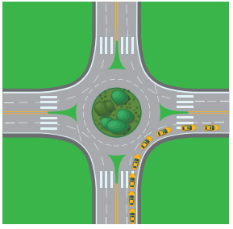
Right Turn
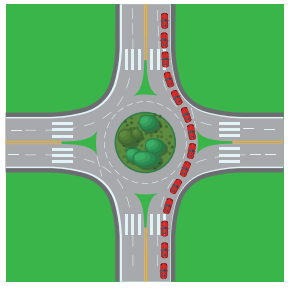
Straight
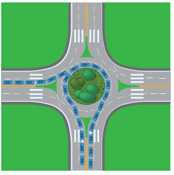
Left Turn
Pedestrians
These are considered pedestrians or vulnerable road users:
- A person walking.
- A person traveling on something other than a vehicle or bicycle. This includes roller skates, a skateboard, etc.
- A person with a disability using a tricycle, quadricycle, or wheelchair for transportation.
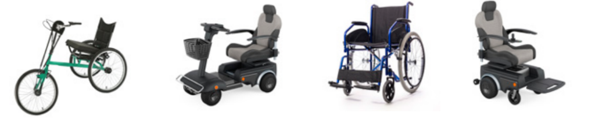
From left to right: Tricycle, Quadricycle, Standard Wheelchair, Electric Wheelchair.
Although pedestrians have the right-of-way, they also must follow the rules of the road.
When there is a pedestrian crossing a roadway with or without a crosswalk, you must use caution, reduce your speed, or stop to allow the pedestrian to safely finish crossing.
Other things to keep in mind:
- Do not pass a vehicle stopped at a crosswalk. You may not be able to see a pedestrian crossing the street.
- If a pedestrian makes eye contact with you, they are ready to cross the street. Yield to the pedestrian.
- Always allow pedestrians enough time to safely cross a street as some groups such as seniors, people with small children, and people with disabilities may require extra time.
Crosswalks
A crosswalk is the part of the road set aside for pedestrians to safely cross the road. They are often marked with white lines. School crossings may have yellow crosswalk lines. Not all crosswalks are marked.
Pedestrians have the right-of-way in marked or unmarked crosswalks. If there is a limit line before the crosswalk, stop at the limit line and allow pedestrians to cross the street.
Some crosswalks have flashing lights. Whether or not the lights are flashing, look for pedestrians and be prepared to stop.
Pedestrians who are Blind
Pedestrians using guide dogs or white canes have the right-of-way at all times. These pedestrians are partially or totally blind. Be careful when you are turning or backing up. This is particularly important if you are driving a hybrid or electric vehicle because blind pedestrians rely on sound to know there is a vehicle nearby.
- Do not stop in the middle of a crosswalk. This could force a blind pedestrian to walk into traffic outside of the crosswalk.
- Do not honk your horn at a blind person.
- When a blind person pulls in their cane and steps away from the intersection, this gesture usually means you may go.
Mountain Roads
If two vehicles meet on a steep narrow road and neither vehicle can pass, the vehicle facing uphill has the right-of-way. The vehicle facing downhill has more control when backing up the hill. The vehicle facing downhill should back up until the vehicle going uphill can pass.